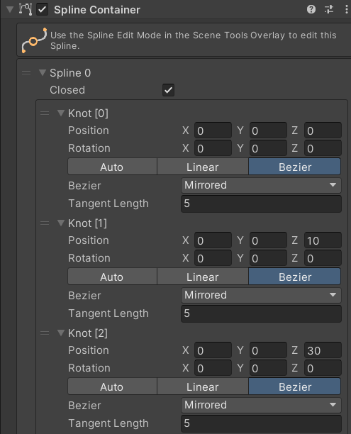

YouTube Demo
Introduction
⚠️ (This tutorial is currently under construction) ⚠️
In this tutorial we are going to create a VR Roller Coaster Shooter Game (an on-rails shooter) for the Oculus/Meta Quest 2 headset!
The gameplay for the game that we are going to make is inspired by Until Dawn: Rush of Blood, one of the first games I ever played in VR. Until Dawn: Rush of Blood is a horror themed on-rails VR shooter game from Supermassive Games, the creators of the 2015 PS4 horror game Until Dawn and the 2022 PS5 horror game The Quarry.
The concept of the game works really well in VR, because you’re probably sitting down in reality and because you’re also sitting down in the virtual reality rollercoaster train cart, it just feels right. Looking around while riding a rollercoaster and shooting at targets placed alongside the rollercoaster tracks from inside the rollercoaster train is a lot of fun and can be really challenging when there are lots of targets to hit and when the train is moving at a high velocity.
Also, you know that queasy feeling in your stomach when you’re on a actual rollercoaster that is going into a steep drop? That turns out to be something your brain does to you because you will also get that same stomach feeling in VR when the roller coaster train makes a steep drop, making everything feel extra real!
In this tutorial you will learn:
- How to setup your project for building to the Oculus/Meta Quest 2 VR headset.
- How to setup your project for VR using the XR Interaction Toolkit package.
- How to setup a VR Player Controller with Full Locomotion using dual thumb sticks.
- How to test your game in VR during Unity Playmode with Quest Link.
- How to create a Unity Terrain with hills, grass, trees, bushes and water.
- How to setup a skybox.
- How to create a roller coaster track using the Unity Splines Package.
- How to make a train cart follow the spline of the roller coaster track.
- How to let the player enter and exit the train.
- How to make pistols and rifles that can be picked up and fired with.
- How to make moving targets for the player that can be shot.
- How to create a player scoring system and UI score display.
- How to create a invisible trigger box that can make ‘things’ happen when the player enters.
- How to create a VR Title scene with a floating Main Menu window for your game.
- How to build your game to your Quest 2 VR headset.
This tutorial was created using Unity 2022.3.9f1 LTS (updated to 6000) with the 3D Core project template.
Dependencies
Hardware Requirements
- A VR Ready PC with a USB-C port
- An Oculus/Meta Quest 2, 3 or Pro VR HMD (Head Mounted Display)
- An Oculus/Meta Quest Link capable USB-C cable
Notes on Quest Link
To use the Quest as a regular PC connected VR Headset, instead of a stand alone mobile one, a Quest Link cable is required. Connecting the Quest to your PC using the Link cable will allow you to play test your game live in the Unity Editor while you are creating it.

Without the Quest Link cable you can still connect your Quest to the Oculus PC application over Wi-Fi but then you’re Wi-Fi router/connection has to be fast enough (6G Wi-Fi) or you may experience motion sickness very quickly.
The default USB-C Quest charging cable that came with the Quest can only be used to charge the headset and to transfer data/builds to the Quest but not to transfer the large display data.
To get a better clue on what is going on with those expensive USB-C cables I recommend watching this YouTube video from Adam Savage: https://www.youtube.com/watch?v=AD5aAd8Oy84
Software
- Unity Hub
- Unity 6000
- Visual Studio Code (or other code editor)
- Oculus Rift Software
- Meta Quest Developer Hub (Optional)
Unity Packages and Assets
You don’t have to download these packages right away, we’ll go over installing them individually.
Packages: Unity Registry
- XR Plugin Management
- XR Interaction Toolkit + Starter Assets Samples
- Oculus XR Plugin
- Splines
- TextMesh Pro + Samples
- Terrain Tools (Optional)
Packages: Asset Store
Tutorial Conventions
To make the reading of this tutorial better this tutorial uses the following conventions:
1: File names, file addresses and folder addresses
Filenames file addresses and folder addresses are all written in Italic so when you see text written in Italic it is always a file or file address in the Unity Project view or in Windows Explorer.
Filename examples:
Level 1.unity, MineCart.wav, VRPlayer.cs, SmallCrate.jpg
Folder address examples:
Assets/MyGame/Scenes, Assets/MyGame/Textures, C:/users/tim/Documents/Unity/Projects/VRRollerCoasterShooter-Project/Assets
File address examples:
Assets/MyGame/Scenes/Level 1.unity, Assets/MyGame/Textures/SmallCrate.jpg, C:/users/tim/Desktop/New Text Document.txt
2: Menu settings and GameObjects
All options and settings in the normal Unity menu bars and windows and also addresses to Unity GameObjects in the game levels, like the game Camera, the Player, the Roller Coaster and the Sun etcetera, are pointed out with right angle brackets > so when you see the right angle brackets in the tutorial text then it points to either a setting or in one of Unity’s menus or to a GameObject in one of the scenes/levels in the Unity Hierarchy view.
Unity Menu bar examples:
Unity Menu Bar > File > Save
Unity Menu Bar > GameObject > 3D Object > Cube
Hierarchy view examples:
Hierarchy view > Level 1 > select VRPlayer
Hierarchy view > Level 1 > VRPlayer > select Main Camera
Also try to watch at least one of the videos below to get a better understanding of how to use Unity: Unity basics
3: Pointing to GameObject script components and variables/properties
To hopefully better show the way that variables and functions in C# code are addressed with the .dot operator, all the values of the variables of the script components are addressed using the dot operator.
Example: Inspector view > Sun.Light.Color.Intensity = 4
The line above means selecting the Sun GameObject, finding its Light component, and setting the Intensity property to 4.
Example in C#:
public GameObject sun;
private Light light;
void Start()
{
light = sun.GetComponent();
sun.light.intensity = 4.0f;
}
void Update()
{
sun.light.intensity = Mathf.PingPong(Time.time, 8);
} Steps: Phase 1
Phase one will be all about creating a VR Roller Coaster Shooter ‘template’ project first, meaning that we’ll create the basic structure and prototype game objects for the entire game so that in Phase two we can iterate on it, and develop things further.
Install the Visual Studio Code script editor
Download & Install Visual Studio Code: https://code.visualstudio.com/
Install the Unity for Visual Studio Code extension: In VS Code > Extensions > search ‘Unity’ > Install.
Download & Install the .NET 7.0 Core SDK: https://dotnet.microsoft.com/en-us/download
Download starter project with all dependencies
Download the starter project from the link below and unzip it to a folder of your choice.
https://github.com/ROCVA-DISSELDORP/VRRollerCoasterSampleProject6.0Install the Unity Editor (with Android build support)
Unity Hub > Installs > Install Editor > Official releases > 6000.0 LTS > Install
- select Android Build Support
- select Windows Build Support (IL2CPP)
- Install
Add Downloaded Unity Project
Unity Hub > Project > Add > Add from disk > select the unzipped project directory
Set Visual Studio Code as the default external script editor
Unity Menu Bar > Edit > Preferences > External Tools
- External Script Editor = Visual Studio Code
- click Regenerate Project Files
Switch Build Platform
Unity Menu Bar > File > Build Settings
- Platform > select Android
- click Switch Platform
Setup Level 1.unity Scene
Create new Level 1.unity scene file: In Assets/MyGame/Scenes, right click > Create > Scene and rename to 'Level 1.unity'.
Open Level 1.unity: Double click the file to open it.
Setup Skybox
Apply skybox material: Unity Menu Bar > Window > Rendering > Lighting > Environment > Skybox Material = Epic_BlueSunset.mat
Save Changes: Press Ctrl + S.
(Save your scene regularly to avoid losing your progress in case of a crash either by going to File > Save in the Unity menu bar or by pressing Control + S on your keyboard. You can see if there are any changes made to the scene that still need to be saved if there is a star * character displayed right after the name of your scene in the Hierarchy view.)
Enable Fog
Enable camera fog: Unity Menu Bar > Window > Rendering > Lighting > Environment > Other Settings
- Fog = Enabled
- Density = 0.02
Save Changes: Press Ctrl + S.
Setup Sun
In Hierarchy, rename ‘Directional Light’ to ‘Sun’ and select it.
In Inspector > Light component:
- Color = White (1, 1, 1, 1)
- Intensity = ~4
Save Changes: Press Ctrl + S.
Fire VRGun
Add new public variables to VRGun class:
public Transform bulletSpawnTransform;
public GameObject bulletPrefab;
public ParticleSystem gunFireParticleSystem;
public AudioSource gunFireAudioSource;
public float fireSpeed = 125.0f;Add new public FireBullet() function to VRGun class:
public void FireBullet()
{
Debug.Log("Gun is Fired!!!");
// Play effects
gunFireParticleSystem.Play();
gunFireAudioSource.Play();
// Spawn bullet
GameObject spawnedBullet = Instantiate(bulletPrefab);
spawnedBullet.transform.position = bulletSpawnTransform.position;
spawnedBullet.transform.rotation = bulletSpawnTransform.rotation;
// Fire it
spawnedBullet.GetComponent().velocity = spawnedBullet.transform.forward * fireSpeed;
// Destroy it after 5 seconds
Destroy(spawnedBullet, 5);
} Setup Gun Firing in Inspector:
- Assign all the new public variables (BulletSpawnTransform, Bullet-Prefab, etc.) by dragging GameObjects from the Hierarchy/Project view.
- In VRGun > XR Grab Interactable > Interactable Events > Activated, click '+' and hook up the VRGun.FireBullet() function.
Create WindZone
Create a WindZone GameObject
Unity Menu Bar > GameObject > 3D Object > WindZone
Inspector view > WindZone.WindZone
- .Turbulence = ~0.2
- .Pulse Magnitude = ~2
- .Pulse Frequency = ~0.08
Enable Wind in Scene View
Scene view Menu Bar > Toggle Skybox, Fog and Various Other Effects > Always Refresh = true
Create Water
Create Water Plane GameObject
Unity Menu Bar > GameObject > 3D > Plane. Rename to 'WaterPlane (0)'. Parent to 'Water'. Remove its Mesh Collider.
Position and Scale WaterPlane
Inspector view > WaterPlane.Transform
- .Position = (0, 1, 0)
- .Scale = (50, 50, 50)
Choose a water material
Use one of the water materials in the materials folder and put it on the plane
Add VR Player
Add XR Interaction Setup Prefab to Scene
From Project view > Assets/Samples/XR Interaction Toolkit/3.07/Prefabs, drag 'XR Interaction Setup.prefab' to Hierarchy.
Setup Player
- Reset its position to (0, 0, 0).
- Right-click on it > Prefab > Unpack Completely.
- Rename ‘XR Origin (XR Rig)’ to ‘VRPlayer’.
- Place the VRPlayer on your terrain surface (e.g., Y position matches terrain height).
- Delete the default 'Main Camera' from the scene.
Create a New VRPlayer Script
Create Script
In Project view > Assets/MyGame/Scripts, right-click > Create > C# Script > name it 'VRPlayer.cs'.
Add Code to VRPlayer.cs
using UnityEngine;
public class PlayerController : MonoBehaviour
{
[Header("Camera Settings")]
public Transform cameraTransform;
public float mouseSensitivity = 100f;
[Header("Gun Settings")]
public Transform gunHolder;
public GameObject gun;
public Transform gunCameraTransform;
bool holdingGun = false;
private CharacterController characterController;
private float verticalRotation = 0f;
void Start()
{
characterController = GetComponent();
Cursor.lockState = CursorLockMode.Locked;
}
void Update()
{
HandleCameraRotation();
HandleGunInput();
}
void HandleCameraRotation()
{
float mouseX = Input.GetAxis("Mouse X") * mouseSensitivity * Time.deltaTime;
float mouseY = Input.GetAxis("Mouse Y") * mouseSensitivity * Time.deltaTime;
transform.Rotate(Vector3.up * mouseX);
verticalRotation -= mouseY;
verticalRotation = Mathf.Clamp(verticalRotation, -90f, 90f);
cameraTransform.localRotation = Quaternion.Euler(verticalRotation, 0f, 0f);
}
void HandleGunInput()
{
if (Input.GetKeyDown(KeyCode.E)) // Grab or drop the gun
{
if (!holdingGun) { AttemptToGrabGun(); }
else { DropGun(); }
}
if (holdingGun && Input.GetButtonDown("Fire1")) // Fire the gun
{
FireGun();
}
}
void AttemptToGrabGun()
{
if ((gun.transform.position - transform.position).magnitude < 2)
{
holdingGun = true;
gun.transform.SetParent(gunCameraTransform);
gun.transform.SetLocalPositionAndRotation(Vector3.zero, Quaternion.identity);
}
}
void DropGun()
{
if (holdingGun)
{
gun.GetComponent().OnRelease();
gun.transform.SetParent(null);
gun = null;
holdingGun = false;
}
}
void FireGun()
{
if (holdingGun)
{
gun.GetComponent().FireBullet();
}
}
}
Add Script Component to VRPlayer GameObject
In Inspector view for the VRPlayer, click Add Component > Scripts > VRPlayer.
Create Roller Coaster Track Shaped Spline Template
Create New Spline GameObject
Unity Menu Bar > GameObject > Spline > Square. Rename to 'RollerCoasterSpline'.
Setup Spline
Position the 'RollerCoasterSpline' at your terrain's height. In the Scene view, select the Spline Edit Mode tool.

In Inspector view > Spline component, set 'Closed' to false to start.
Setup Spline Knots
Note: Image path is local.
In the Inspector, adjust the position, rotation, and tangent for each knot. Start with Knot [0] at (0, 0, 0), and continue adding/adjusting knots to form your track shape.
.Knot [0]
.Knot [1]
.Knot [2]
.Knot [3]
Either contact the teacher for the spline or look on the original tutorial for the rest of the knots
When finished, set the spline's 'Closed' property back to true if you want a looping track.
Generate Rollercoaster Track Mesh
1. Create Track Part Prefab
First, build a reusable track segment from primitive shapes.
- Create an empty GameObject named 'TrackPart-Prefab'. Inside it, create another empty named 'Mesh'.
- Create 1 Cube and 2 Cylinders and parent them to 'Mesh'.
- Apply the following transform values:
Cube:
Position: (0, 0, 0)
Scale: (1, 0.1, 0.1)
Cylinder (0):
Position: (-0.5, 0, 0)
Rotation: (90, 0, 0)
Scale: (0.1, 0.5, 0.1)
Cylinder (1):
Position: (0.5, 0, 0)
Rotation: (90, 0, 0)
Scale: (0.1, 0.5, 0.1)
Finally, drag 'TrackPart-Prefab' into your prefabs folder and delete it from the scene.
2. Spawn Track Parts along Spline
- Select your 'RollerCoasterSpline' GameObject.
- Add the 'Spline Instantiate' component.
- Assign your 'TrackPart-Prefab' to the 'Items to Instantiate' list.
- Set 'Spacing' to approximately 0.85.
Create Primitive Roller Coaster Train 3D-Model
1. Construct Train from Primitives
Create an empty GameObject named 'RollerCoasterTrain' with a child empty named 'Mesh'. Create the following primitives and parent them to 'Mesh'.
// --- CUBES ---
Cube (0): Position: (0, 0.6, 0), Scale: (1.8, 0.5, 2)
Cube (1): Position: (0, 1.25, 0.8), Scale: (1.8, 0.8, 0.4)
Cube (2): Position: (0, 1.25, -0.9), Scale: (1.8, 0.8, 0.2)
Cube (3): Position: (-0.8, 1.25, -0.1), Scale: (0.2, 0.8, 1.4)
Cube (4): Position: (0.8, 1.25, -0.1), Scale: (0.2, 0.8, 1.4)
Cube (5): Position: (0, 0.25, 0), Scale: (0.5, 0.2, 1.6)
Cube (6): Position: (0, 1.275, -0.55), Scale: (1.4, 0.05, 0.5)
// --- CYLINDERS ---
Cylinder(0): Pos: (0, 0.18, 0.6), Rot: (90, 90, 0), Scale: (0.1, 0.4, 0.1)
Cylinder(1): Pos: (0, 0.18, -0.6), Rot: (90, 90, 0), Scale: (0.1, 0.4, 0.1)
Cylinder(2): Pos: (-0.5, 0.18, 0.6), Rot: (90, 90, 0), Scale: (0.25, 0.1, 0.25)
Cylinder(3): Pos: (0.5, 0.18, 0.6), Rot: (90, 90, 0), Scale: (0.25, 0.1, 0.25)
Cylinder(4): Pos: (-0.5, 0.18, -0.6), Rot: (90, 90, 0), Scale: (0.25, 0.1, 0.25)
Cylinder(5): Pos: (0.5, 0.18, -0.6), Rot: (90, 90, 0), Scale: (0.25, 0.1, 0.25)
Remove the 'Capsule Collider' components from all Cylinders.
2. Add Audio and Materials
- Create a new material and apply it to all the primitive shapes.
- Add an 'Audio Source' component to the root 'RollerCoasterTrain' GameObject.
- Assign a rolling sound effect. Set 'Loop' to true and disable 'Play On Awake'. Set 'Spatial Blend' to 1 (3D).
Setup Rollercoaster Train
1. Make the Train Follow the Spline
- Select the 'RollerCoasterTrain' GameObject.
- Add the 'Spline Animate' component.
- Drag your 'RollerCoasterSpline' into the component's 'Spline' field.
- Set Method to 'Speed', Speed to ~5, Loop Mode to 'Once'
2. Place the VR Player in the Train
In the Hierarchy, parent the 'VRPlayer' GameObject to the 'RollerCoasterTrain'. Set the player's local position to (0, 0.8, 0) to position them correctly in the cart.
3. Test if your game works
Right now you should have a character in a cart on a track, the player should be able to look around
Setup VRPlayer (Senstive step ask teacher for help)
1. Setup Tracking
Select the 'VRPlayer' GameObject. In the Inspector, find the 'XR Origin' component and set 'Tracking Origin Mode' to Floor.
2. Setup Walking
- Enable Smooth Turning: In Hierarchy, go to VRPlayer > Camera Offset > Right Controller. In the Inspector, find the 'Action Based Controller Manager' and check 'Smooth Turn Enabled'.
- Adjust Smooth Turn Speed: In Hierarchy, go to VRPlayer > Locomotion System > Turn. In the Inspector, find the 'Continuous Turn Provider' and set 'Turn Speed' to 90.
3. Setup Grabbing
For both the Left Controller > Ray Interactor and Right Controller > Ray Interactor GameObjects, adjust the 'XR Ray Interactor' component:
- Set 'Force Grab' to true.
- Set 'Anchor Control' to false.
- Drag the parent 'Left Controller' (or 'Right Controller') GameObject into the 'Attach Transform' field.
4. Disable Teleport Locomotion
- Adjust Controller Managers: On both the Left and Right Controller GameObjects, find the 'Action Based Controller Manager' component and set its three Teleport fields ('Teleport Interactor', 'Teleport Mode Activate', 'Teleport Mode Cancel') to 'None'.
- Deactivate Teleport Interactors: In the Hierarchy, find the 'Teleport Interactor' child GameObject under each controller and disable it by unchecking the box next to its name in the Inspector.
- Deactivate Teleportation Provider: In Hierarchy, go to VRPlayer > Locomotion System and disable the 'Teleportation' GameObject.
5. Disable movement Tunneling Vignette
In Hierarchy, go to VRPlayer > Main Camera and disable the 'TunnelingVignette' GameObject.
Testing VR in Unity Editor Play Mode (Not possible on all laptops)
Setup Steps
- Check if you meet the Quest Link requirements.
- Download & Install the Oculus Rift Software.
- Setup Oculus Link with a cable (recommended) or wireless.
- Enable Unknown Sources: In the Oculus PC app > Settings > General, toggle 'Unknown Sources' to on.
- Enable Pass-Through: In the Oculus PC app > Settings > Beta, toggle 'Pass-through over Oculus Link' to on.
Playtest Your Game
- Connect your Quest headset and enable Oculus Link.
- In the Unity Editor, press the Play button.
- Put on your headset to see the game running live.
Notes
To test your game in VR in the Unity Editor during Play Mode you first have to turn on your Quest headset and connect it to your computer with the USB link cable. Then you have to launch the Oculus App on your computer and make sure your headset shows up as connected in the Oculus App > Devices window. Then when you put on the Quest headset you should see a pop up window asking if you want to enable Oculus Link and a pop up window asking if you want to enable USB debugging, press yes on both pop ups. When Oculus Link is enabled you will see the Oculus Dashboard instead of the regular Stand alone Quest dashboard environment. When you are in the Oculus dashboard on your Quest then you can press Play in Unity on your computer. Your scene will load and you can playtest it in VR!